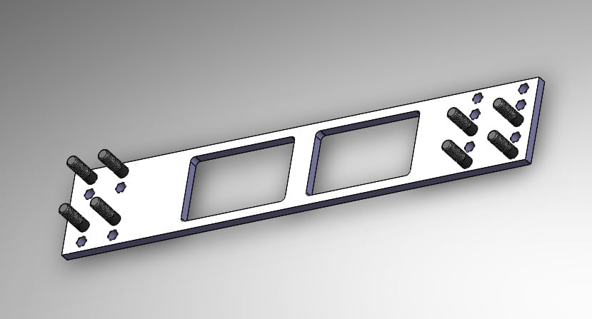

-
Spray paint to mark the cuts but showing no progress.
Been a few people making some strides lately with some decent jigs. Overall idea's are starting to become fruitful, some better than others.86na - BlueZ
Shiro #366 - Kouki Monster
85t - Mr Tickles -
Anyone can make a jig and weld a bung… this is going to be more elegant…
I'm going to make 1 backing plate for each arm that spans both pivots, that will have studs in it for my clamp plates and turnbuckles, just like my drawing, except connected
Installation will be as simple as lining it up against something vertical, marking off a set distance, chopping with a sawzall or whatever, then welding, no jig required
-
Well a jig ensures properly alignment for whatever fabrication you so choose to pursue. Gives the best baseline.
A poka yoke design would be best for masses capable of understanding and installing. Cheap, quick and effective will always win the market battle. I wish you luck.86na - BlueZ
Shiro #366 - Kouki Monster
85t - Mr Tickles -
I'll follow the already-done group. The group that gets things done? Whatever that is.
- VG30DET (HE341) 86 300ZX - 1982 280ZX Turbo - Headered NA 1986 300ZX 2+2 - 2000 Xterra - -
I am so in awe, you don't even know… I might as well just quit now eh?
-
lol G-E. What you don't know. Theres a reason multiple people are furthering their cars and actually have them functioning, while you keep pushing out cookie cutter untested crap. I've yet to see your car function.Originally posted by adamvann3- VG30DET (HE341) 86 300ZX - 1982 280ZX Turbo - Headered NA 1986 300ZX 2+2 - 2000 Xterra - -
Yall quit whining and build me something.Elitist Prick Black Z owner.
1986 300zx Turbo
2011 Ford F150 Super Crew 4x2 EcoBOOST
1985 Toyota 4Runner, locked, lifted, geared, uglied.

-
I think that GE has a good design in mind. My only concern is the plate slipping. Perhaps some kind of slots to lock the plate in place? So that when tightened down, the plate locks into the slots so even if the nuts come loose, it wont slip. I would rather have an arm that can adjust BOTH camber and toe, so that's why GE most likely will be taking my money. So far in regards to the arms that have been created recently, the options are between an arm with only toe adjustment that has to be unbolted from the subframe to be adjusted, and an arm that is cut in half and bent with adjusters… This seems promising…
Dont give up, build your dream Z -
Mike posted my picture. You can see my inner heim joint is mostly centered in the crossmember bracket, and the outer is offset a little. I did that so the welded insert didn't interfere with tire clearance. I didn't have the 315/30/18 hooser slicks I'll eventually run on the race car.
Also I can use double adjustable heims, I just did my first ones with plain welded inserts because thats what was available and I didn't want to wait on parts. The next set I do will have adjustment with out removing the heim to turn it.
Yes my LCAs dont have camber adjustment built in. I offset the outer mounting point to reduce camber and get it closer to a desirable ~2deg base camber at low ride heights. Its just simpler. Then with a standard camber mod on the crossmember if you need it and you have your adjustment. I slotted my crossmember but didn't put in eccentrics to adjust it easily as Im just going to align it and see how my my LCAs changed camber and what range I want to do the final mod at.
With GE's design, it looks alright. But there isnt a ton of camber adjustment. Which is half of the battle at low ride heights. Plus look at my control arms. Those are stock placement of the heims, and the inner is adjusted about 2 turns out to get to zero toe. If you eye ball where the flat plate is in relation to the heim joint its self, it puts the plate 1/3 off the side of the control arm or more depending on how far back you have to cut. More bracing and reworking of the factory metal for less adjustability. Plus you still need access to FOUR nuts/bolts to adjust or secure camber. Im not sure if those will stay tight forever, especially when you start putting some sticky tires on it.splatter fake blood on fubar'd quarter and roll out.
pedestrians=mobile clipping points -Benedict on PurePontiackid's 280zx -
I didn't think you needed a ton of adjustment at the rodend, because the tabs can still be slotted, and the whole thing can be welded already tilted to a more normal orientation, since everything is being cut off already…
The slots will allow about 1cm of twist, the rodends will have about 2cm of extention, and the spacers are unequal, so the trackwidth can be adjusted slightly too
All very conservative, because part of the goal was to be idiot-proof
-
Do you still have to unbolt the heim joint to adjust it? Looks like it. Also are you selling those parts to individuals or are you going to do a complete service with finished control arms?
From what I've done so far I'll offer two control arms. Average ride height and low ride height with reduced camber. All finished, bolt on solution. I wanted to figure something out to adjust camber on the arms, but it just adds lots of complexity and weight.
I really want to get started on full tubular control arms. Probably just use the housing for the wheel bearing and build off there. Im looking at the R31 and M30 differences vs the Z31 control arms. Lots of work but should look/function awesome.splatter fake blood on fubar'd quarter and roll out.
pedestrians=mobile clipping points -Benedict on PurePontiackid's 280zx -
Tubular would be most excellent. Sign me up!Originally posted by Rustspecs13 View PostElitist Prick Black Z owner.
1986 300zx Turbo
2011 Ford F150 Super Crew 4x2 EcoBOOST
1985 Toyota 4Runner, locked, lifted, geared, uglied.
-
You're number two after Josh Hensley. Haha but consider it done.splatter fake blood on fubar'd quarter and roll out.
pedestrians=mobile clipping points -Benedict on PurePontiackid's 280zx -
No but that's partly because I'm in canada, I'm willing to partner/advise someone who wants to do it (like andrew…)Originally posted by Rustspecs13
And to adjust the the camber, you only have to loosen the locknuts slightly, slide the plate with the turnbuckle, retighten
To adjust extension/toe, you also have to loosed the jamnut and turn the turnbuckle, before retightening
If you wanted to save weight after adding weight from my kit, my suggestion would be a hole saw to perforate all the panels further towards the hub where they have greater leveraged mass… maybe cut out the old spring perch area etc…Originally posted by Rustspecs13
Well that's kinda why I went the route I did, I examined the weight of using various sizes of dom tubing and wall thicknesses, and came to the conclusion that going tubular won't make it more rigid or lighterOriginally posted by Rustspecs13
And then you end up doing a ton of fab work on an area that doesn't add function -
Made some changes to allow more camber adjustment and eventually more trackwidth adjustment without binding… I would like to see a z31 rear go +10mm wider
Should allow greater than 3* of correction, in base increments, then fine tuning with the slots


Copyright © 2006–. All rights reserved. Privacy Policy